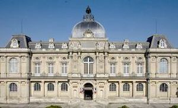
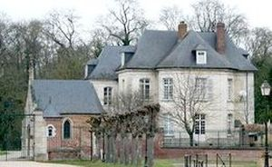
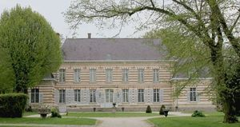
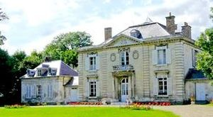
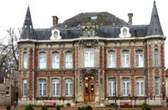

Recensement Jean-Claude Truffet
| Département | 80 — Somme |
| Canton | Amiens |
| Commune | Amiens |
| Type d'édifice | Château |
| Période d'origine | XVII |
| Coordonnées GPS | 49° 53' 26" Nord, 2° 17' 47" Est Argroeuvre GPS : 49° 55' 47" Nord, 2° 13' 31" Est Fouilloy GPS : 49° 54' 01" Nord, 2° 30' 16" Est Boury; GPS : 49° 48' 47,88" Nord, 2° 25' 51,96" Est |





Quatre châteaux dans cet article Amiens, Boury, le Fouilloy, Argoeuvres , St-Fuscien. AMIENS Classée aux M.H. depuis 1862. est aussi passionnant que le musée Picardie à découvrir. Au XVIIIe siècle, Étienne de Fay créa, à l'Abbaye Saint-Jean-des-Prémontrés d'Amiens, un cabinet d'antiquités et de curiosités, composé d'une collection d'objets divers parmi lesquels, 16 tableaux du XVIIe siècle, statue de la Vierge en albâtre du XVe siècle, plat de Bernard Palissy, des pièces de numismatique, des céramiques, des instruments d'astronomie. En 1786, le Vicomte de Breteuil adressa, au roi, une lettre lui demandant l'autorisation de créer un Musée à Amiens. La Révolution Française empêcha, provisoirement, ce projet. En 1802, 85 tableaux et gravures furent déposés à la Malmaison, pour former le « Musée de la Bourse ». Au moment de la signature de la Paix d'Amiens, l'État les fit déposer à l'Hôtel-de-Ville d'Amiens. FOUILLOY à l'Est d'Amiens en 1636, le siège de Corbie. La collégiale de Fouilloy est alors incendiée. Les bateliers de Fouilloy : Bâtiment en brique, de la fin du XIXe siècle, aux allures de château, résidence privée appartenant à la famille Blanchard, rachetée par la commune en 1943. Un parc enherbé est situé à l'arrière de l'édifice. BOURY à Thézy-Climont possède 2 façades reliées par un fronton triangulaire. Une avancée à 3 pans complète le château, côté Est. partie sud d'Amiens, ST-FUSCIEN En 1105, Enguerrand de Boves, comte d'Amiens dote l'abbaye de Saint-Fuscien qui est restaurée et occupée par des bénédictins. En 1648, le logis abbatial (dit à présent château de Saint Fuscien) est reconstruit, lors de la Révolution française, la congrégation bénédictine est dissoute en 1790, les biens de l'abbaye deviennent propriété de la nation, les bâtiments conventuels sont vendus à un particulier. De grandes modifications sont effectuées et une partie des bâtiments sont démolies pour récupérer des matériaux de construction. À présent, il ne subsiste que l'hôtel abbatial dit château de Saint-Fuscien.
ARGOEUVES; village voisin, c'est le général de cavalerie Pierre-Auguste Dejean, colonel de dragons, lieutenant général et aide de camp de l'Empereur, qui construisit le château. Il y a tout lieu de penser que c'est seulement au début du XIXe siècle que Dejean, alors âgé d'une trentaine d'années, s'est improvisé maître d'uvre. C'est donc sous l'Empire que Dejean dut dresser, pour son amie Gorguettes d'Arguves (la famille était propriétaire de la seigneurie depuis le milieu du XVIIe siècle), les plans de l'unique édifice que l'on possède de lui et qui constitue par conséquent un intéressant témoignage de ses talents d'architecte occasionnel. Le château est une aimable folie entièrement en pierre, son style et l'ordonnance de ses façades restent très influencés par le XVIIIe siècle bien qu'il soit d'une construction plus tardive. A la façade principale la porte d'entrée est précédée d'un petit portique constitué de deux colonnes d'ordre dorique, cannelées dans leur partie inférieure, supportant une frise ornée de triglyphes et de métopes. L'avant corps, dans l'alignement de la façade, est surmonté d'un fronton triangulaire, alors que sur le parc l'avant corps est à trois pans et par conséquent saillant. A l'intérieur, des décors de stucs, de lambris ainsi que des peintures symbolisant les travaux champêtres sont conservés. Éléments protégés MH : le château, façades et toitures, ses dépendances (dont le pigeonnier et la serre) et son parc, en totalité: inscription par arrêté du 5 février 2013, modifiée par arrêté du 30 juin 2015.
Amiens; Vicomte de Breteuil Argoeuves; Pierre-Auguste Dejean Fouilloy ; famille Blanchard,"
Quatre châteaux dans cet article Amiens grav-1 Argoeuvres grav-4 Fouilloy - grav-5 et Boury grav-2 , St-Fuscien grav-3. Amiens GPS : 49° 53' 26" Nord, 2° 17' 47" Est Argroeuvre GPS : 49° 55' 47" Nord, 2° 13' 31" Est Fouilloy GPS : 49° 54' 01" Nord, 2° 30' 16" Est Boury; GPS : 49° 48' 47,88" Nord, 2° 25' 51,96" Est